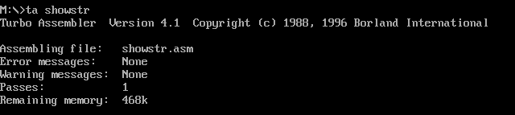

实验3：开发独立内核的操作系统
本文最后更新于：2 years ago
实验3：开发独立内核的操作系统
实验要求
- 寻找或测试一套匹配的汇编与c编译器组合。利用c编译器，将一个样板C程序进行编译，获得符号列表文档，分析全局变量、局部变量、变量初始化、函数调用、参数传递情况，确定一种匹配的汇编语言工具，在实验报告中描述这些工作。
- 写一个汇编程和c程序混合编程实例，展示你所用的这套组合环境的使用。汇编模块中定义一个字符串，调用C语言的函数，统计其中某个字符出现的次数（函数返回），汇编模块显示统计结果。执行程序可以在DOS中运行。
- 重写实验二程序，实验二的的监控程序从引导程序分离独立，生成一个COM格式程序的独立内核，在1.44MB软盘映像中，保存到特定的几个扇区。利用汇编程和c程序混合编程监控程序命令保留原有程序功能，如可以按操作选择，执行一个或几个用户程序、加载用户程序和返回监控程序；执行完一个用户程序后，可以执行下一个。
- 利用汇编程和c程序混合编程的优势，多用c语言扩展监控程序命令处理能力。
- 重写引导程序，加载COM格式程序的独立内核。
- 拓展自己的软件项目管理目录，管理实验项目相关文档
实验环境
1.系统与虚拟机
- Windows 10 - x64 18363.1139
- VMware Workstation 16 Player：用于跑ubuntu虚拟机
- Ubuntu 20.04.2 LTS
- VirtualBox-6.1.18-142142-Win：用于运行.img文件
- DOSBox DOS Emulator 0,74,0,0：用于tcc和tasm编译，并且运行.com文件
2.windows上的相关软件、编译器等
- NASM version 2.10.07 compiled on Jan 2 2013
- TCC.EXE：用于16位C语言编程
- TLINK.EXE：用于C语言与汇编语言链接
- TASM.EXE：用于.asm文件的汇编
3.Ubuntu上的相关软件、编译器等
- NASM version 2.14.02
- makefile：GNU Make 4.2.1
实验前置知识
1.汇编调用C中的函数与变量
-
在C语言中要把相关变量和函数定义在全局之中；
-
在汇编中要把调用的函数名与变量编程这样的形式
extrn _a（加入了extrn和下划线），这是因为C语言在汇编后，会自动在所有变量名前面添加下划线，这可以使程序员不必为了变量名可能重名而小心翼翼。
2.C调用汇编中的函数与变量
- 汇编的所有函数名前面需要添加下划线，并且使用public来声明使变量成为全局变量
- 在C语言中使用extern来声明调用的函数，如
extern int sum(int a, int b);
实验过程
1.掌握编译方法（tcc+tasm+tlink）
由于tcc和tasm都是16位的，它们无法在windows或linux下运行，所以我们需要在dosbox下编译和链接。
编译的命令主要是：
tcc -mt -c -oupper.obj upper.c > ccmsg.txt
tasm showstr.asm showstr.obj > amsg.txt
tlink /3 /t showstr.obj upper.obj, showstr.com,,当然，也有批处理的方式（老师提供的文件中有这几个写好的文件）：

打开文件，可以看到运行方式：
ta showstr
tc upper
tl showstr upper

可以看到在这个过程中，C程序编译生成.obj文件，asm文件汇编生成.obj文件，再通过tlink将两个.obj文件链接成.com文件。最终运行结果正确，字符串中的所有字符从小写转为大写。
2.写一个汇编程序和c程序混合编程实例
由于考虑到在后续的实验过程中我还会需要用到各种函数。并且我猜想，如果把所有IO操作/程序调用的相关函数准备好，以C语言作为主要的编程语言，我将可以非常轻松的完成自己的操作系统。
我的monitor.asm文件如下，它的主要功能是准备好各种全局变量，比如字符串Message，调用准备好的asm函数库，并且在程序运行后，立刻跳入我的mymain函数中。
extrn _mymain:near
public _Message
.8086
_TEXT segment byte public 'CODE'
DGROUP group _TEXT,_DATA,_BSS
assume cs:_TEXT
org 100h
start:
mov ax,cs
mov ds,ax; DS = CS
mov es,ax; ES = CS
mov ss,ax; SS = cs
call near ptr _mymain ;跳入C里的mymain函数
jmp $
include asm_lib.asm ;调用汇编函数库
_datadef:
_Message db 'WuHaolan 19335209 WuHaolan 19335209 ',0 ;一个全局定义的字符串
_TEXT ends
;************DATA segment*************
_DATA segment word public 'DATA'
_DATA ends
;*************BSS segment*************
_BSS segment word public 'BSS'
_BSS ends
;**************end of file***********
end start
汇编函数库asm_lib.asm中，只写了一个字符输出的函数。（具体的相关内容我会在后文解释）
;输出字符
public _printChar
_printChar proc
push bp
mov bp,sp
mov al,[bp+4]
mov bl,0
mov ah,0eh
int 10h
mov sp,bp
pop bp
ret
_printChar endpC语言函数库main.c中，准备了字符串输出函数print_str(char * str)，数字输出函数print_int(int num)，小写转大写函数upper()，统计字符串中的"a"的数量的函数word_cnt(char* str)，主函数mymain()
extern char Message[];
extern void printChar(char c);
int cnt = 0;
char buf[20];
upper(){
int i=0;
while(Message[i]) {
if (Message[i]>='a'&&Message[i]<='z')
Message[i]=Message[i]+'A'-'a';
i++;
}
}
void print_str(char* str){
int i = 0;
while(str[i]){
printChar(str[i]);
i++;
}
}
void print_int(int num){
int i = 0;
while(num>0){
buf[i] = num % 10 + '0';
num = num / 10;
i++;
}
buf[i] = '\0';
for (i = i-1; i >= 0;i--){
printChar(buf[i]);
}
}
void word_cnt(char* str){
int i = 0;
cnt = 0;
while(str[i]){
if(str[i] == 'a'){
cnt++;
}
i++;
}
print_int(cnt);
}
void mymain( ){
print_str(Message);
word_cnt(Message);
return;
}如图，可以看到，字符串"WuHaolan 19335209 WuHaolan 19335209 "中，总共有4个'a'，结果正确

3.生成一个COM格式程序的独立内核
基本架构：
- 内核：MONITOR.COM由monitor.asm + main.c + asm_lib.asm 构成。
- 引导程序：loader.asm
- 开机图标：startOS.asm
- 用户程序：1.asm 2.asm 3.asm 4.asm
接下来我将按顺序分别说明每个程序：
（1）monitor.asm的作用更像是一个桥，他起到连接C中的主函数、C函数库与汇编函数库的作用。使用call直接进入C函数，这是因为我对于tasm语法不够熟悉（这种上古级汇编语言），能找到相关的资料也有限。我不希望花太多功夫在汇编程序上，使用C语言来编程，我会更将轻松一些。使用include可以引入在另一个文件里的汇编函数库asm_lib.asm，分开文件来编写，会更加清晰一些。在最后只需要对monitor.asm和main.c进行编译即可。
extrn _mymain:near
.8086
_TEXT segment byte public 'CODE'
DGROUP group _TEXT,_DATA,_BSS
assume cs:_TEXT
org 100h
start:
mov ax,cs
mov ds,ax; DS = CS
mov es,ax; ES = CS
mov ss,ax; SS = cs
call near ptr _mymain ;进入C主程序
jmp $
include asm_lib.asm ;使用include引用汇编函数库
_TEXT ends
;************DATA segment*************
_DATA segment word public 'DATA'
_DATA ends
;*************BSS segment*************
_BSS segment word public 'BSS'
_BSS ends
;**************end of file***********
end start
（2）asm_lib.asm中包含了一些常用的I/O操作、清屏、将程序导入内存的过程、获取时间的过程。这些过程大都与底层硬件交互有关，在此基础上才能写出C函数库。
写汇编函数的基本方法是，以函数名+proc为开头，将使用到的关键寄存器push，并在使用后pop，最后ret以返回到调用的代码地址，以函数名+endp为结尾。
（i）输出一个字符
使用下述的这种功能号，可以使得输出字符，同时光标会往后移。要怎么寻找到入栈的变量呢？想将栈寄存器sp的值赋给bp，此时栈中已经压入了bp和ip，要想找到新传入的参数ch，就要将bp+4。

public _printChar
_printChar proc
push bp
mov bp,sp
mov al,[bp+4] ;ch\ip\bp 通过bp来寻找变量，需要bp+4
mov bl,0 ;测试过，非图形模式无法改变颜色
mov ah,0eh ;功能号0eh teletype模式
int 10h
mov sp,bp
pop bp
ret
_printChar endp（ii）输入一个字符
这只是直接获取一个字符，并将其赋值给变量cin。但是想要达成边输入边显示和光标后移的效果，需要在C函数中再做更多的处理。
;输入字符
public _Readchar
_Readchar proc
mov ah,0
int 16h
mov byte ptr [_cin],al ;将输入的值赋给cin变量
ret
_Readchar endp（iii）清屏
由于使用到的寄存器较多，需要将它们都入栈。调用中断int 10h，进行清屏。
public _cls
_cls proc
; 清屏
push ax
push bx
push cx
push dx
mov ax, 600h ; AH = 6, AL = 0
mov bx, 700h ; 黑底白字(BL = 7)
mov cx, 0 ; 左上角: (0, 0)
mov dx, 184fh ; 右下角: (24, 79)
int 10h ; 显示中断
mov ah,2
mov bh,0
mov dx,0
int 10h
pop dx
pop cx
pop bx
pop ax
ret
_cls endp（iv）载入用户程序
基本结构与实验2中的类似，不再赘述。
这个函数会传递一个参数，对应的是扇区号。通过bp来寻得该参数，然后将该扇区的代码端加载到内存中。
public _RunProm
_RunProm proc
push ds
push es
push bp
mov bp,sp
mov ax,cs ;段地址 ; 存放数据的内存基地址
mov es,ax ;设置段地址（不能直接mov es,段地址）
mov bx, OffSetOfUserPrg ;偏移地址; 存放数据的内存偏移地址
mov ah,2 ; 功能号
mov al,1 ;扇区数
mov dl,0 ;驱动器号 ; 软盘为0，硬盘和U盘为80H
mov dh,0 ;磁头号 ; 起始编号为0
mov ch,0 ;柱面号 ; 起始编号为0
mov cl,[bp+8] ;起始扇区号 ; 起始编号为1
int 13H ; 调用读磁盘BIOS的13h功能
; 用户程序a.com已加载到指定内存区域
mov bx,OffSetOfUserPrg
call bx ;执行用户程序
pop bp
pop es
pop ds
ret
_RunProm endp（v）获取系统时间
调用BIOS中的int 1ah，功能号02h，可以得到小时、分钟、秒的BCD格式编码。比如现在时14：42：50，得到的数字是（0x14：0x42：0x50）。

public _time
_time proc
push ax
push bx
push cx
push dx
mov ah,02h
int 1ah
mov byte ptr[_h], ch
mov byte ptr[_min], cl
mov byte ptr[_sec], dh
pop dx
pop cx
pop bx
pop ax
ret
_time endp（3）main.c中包含了主函数与一些常用的C函数
该文件中，主要包含了C函数库，与mymain()函数，是整个OS最核心部分
（i）输出相关函数
使用汇编函数库中的extern void printChar(char c);，分别写出一个字符串与数字的输出函数
void print_str(char* str){
int i = 0;
while(str[i]){
printChar(str[i]);
i++;
}
}
void print_int(int num){
int i = 0;
if(!num)printChar('0');
while(num>0){
buf[i] = num % 10 + '0';
num = num / 10;
i++;
}
for (i = i-1; i >= 0;i--){
printChar(buf[i]);
}
}（ii）输入函数
调用readchar来读取一行字符串。由于readchar已经读取的字符存入cin，根据回车键（ASCII码为：13）来判断什么时候输入结束，需要判断用户是否按下退格键（ASCII码为：8），由于退格键的效果只能使得光标后退一个，而不能使字符去除。所以我们可以反复输出空格键和退格键，达成我们习惯的效果。具体过程可看下面代码的注释。

void get_str(char* cin_line){
int i=0;
Readchar();
while(cin!=13){
if(cin==8){
printChar(cin); //如 abcd， 此时光标在d处
printChar(32); // abc _， 此时光标在空格后面
i--;
printChar(cin); // abc_， 再次回退，是光标位于c后面
Readchar();
continue;
}
printChar(cin);
cin_line[i]=cin;
i++;
Readchar();
}
cin_line[i]='\0';
}（iii）几个字符串处理函数：void word_cnt(char* str, char c );、void upper(char * str);、void lower(char * str);、int isstr_eql(char* a, char* b);，此处不必赘述。
（iv）输出当前的时间
根据上述我们得到了时间参数的BCD码，它是十六进制的，所以我们只需要temp= h/16*10 + h%16;，就可以得到十进制的时间。
吐槽：由于没有给三个变量初始化，我硬是debug了半个小时。
void print_time(){
h = 0;
min = 0;
sec = 0;
time();
temp= h/16*10 + h%16;
if(temp == 0){
print_str("00");
}else if(temp < 10){
printChar('0');
print_int(temp);
}else{
print_int(temp);
}
printChar(':');
temp= min/16*10 + min%16;
if(temp == 0){
print_str("00");
}else if(temp < 10){
printChar('0');
print_int(temp);
}else{
print_int(temp);
}
printChar(':');
temp= sec/16*10 + sec%16;
if(temp == 0){
print_str("00");
}else if(temp < 10){
printChar('0');
print_int(temp);
}else{
print_int(temp);
}
}（v）指令判断函数void get_command(char* str);
根据输入的字符串，进行分支判断是那种指令，如果不存在该指令则输出“非法指令”。
（vi）主函数
void mymain( ){
cls(); //清屏
RunProm(16); //跑开机标志的程序
start(); //输入打招呼的语句
is_loop = 1; //用于判断是否结束循环
while(is_loop){
print_str("\r\n>>>");
get_str(Message); //输入命令
get_command(Message); //执行命令
}
}（vii）文件目录
使用了一个结构体来储存文件信息，并且有函数可以直接输出所有文件信息
struct fileContent{
char filename[20];
char filesize[10];
char filesector[10];
};
struct fileContent content[5]={
{"1.bin" , "401 bytes", "sec 12"},
{"2.bin" , "348 bytes", "sec 13"},
{"3.bin" , "365 bytes", "sec 14"},
{"4.bin" , "401 bytes", "sec 15"},
{"startOS.bin" , "512 bytes", "sec 16"}
};else if(isstr_eql(str,"list")){
int i = 0;
for(i = 0; i < 5; i ++){
print_str(content[i].filename);
printChar(' ');
print_str(content[i].filesize);
printChar(' ');
print_str(content[i].filesector);
print_str("\r\n");
}（4）引导程序loader.asm，主要作用是当虚拟机开启的时候，立刻跳转到内核文件。所以需要org 7c00h，以便开机执行。然后把从扇区中将内核程序载入到内存中，控制权交给内核。注意：需要确保512B的大小，并且以55aa结尾。
org 7c00h ; BIOS将把引导扇区加载到0:7C00h处，并开始执行
OS_offset equ 0A100h
ReadOs:
mov ax,cs ;段地址 ; 存放数据的内存基地址
mov es,ax ;设置段地址（不能直接mov es,段地址）
mov bx, OS_offset
mov ah,2 ;功能号
mov al,5 ;扇区数，内核占用扇区数 注意：不止加载了一个扇区
mov dl,0 ;驱动器号 ; 软盘为0，硬盘和U盘为80H
mov dh,0 ;磁头号 ; 起始编号为0
mov ch,0 ;柱面号 ; 起始编号为0
mov cl,2 ;2号扇区存放的是内核程序
int 13H ;调用读磁盘BIOS的13h功能
jmp 0a00h:100h
times 510 - ($ - $$) db 0
db 0x55
db 0xaa（5）StartOS.asm，是开机显示标志的程序
考虑到Windows和Linux开机都会由一段动画。我也决定做一个，但是做出动态的动画要花更多的时间，所以我制作了一个标志，这样能够使大家对我的操作系统印象更加深刻。
使用了三次清屏过程，来达成显示三个不同颜色框框的效果。将几行文字输出，并且仿照老师最初给的程序，使用两个延时器，达成延迟的效果。
delay equ 50000
ddelay equ 35000
org 8c00h
start:
xor ax,ax ; AX = 0 程序加载到0000：100h才能正确执行
mov ax,cs ; 开机这些寄存器都为0
mov es,ax ; ES = 0
mov ds,ax ; DS = CS
mov es,ax ; ES = CS
mov ax,0B800h ; 文本窗口显存起始地址
mov gs,ax ; GS = B800h
mov ah,6 ;清屏成蓝色 显示在显示屏幕中部
mov al,0 ;0全屏幕为空白
mov ch,4 ;左上角行号
mov cl,14 ;左上角列号
mov dh,20 ;右下角行号
mov dl,66 ;右下角列号
mov bh,00010010b ;蓝色 00010010
int 10h
mov ch,5 ;左上角行号
mov cl,18 ;左上角列号
mov dh,19 ;右下角行号
mov dl,62 ;右下角列号
mov bh,00110010b ;青色 00110010
int 10h
mov ch,6 ;左上角行号
mov cl,22 ;左上角列号
mov dh,18 ;右下角行号
mov dl,58 ;右下角列号
mov bh,00100010b ;绿色 00100010
int 10h
print:
mov cx,11
mov ax,str0
mov si,ax
mov bp,1172
loop1:
push cx
mov cx,29
loop2:
mov ah,0fh
mov al,[si]
mov word[gs:bp],ax
inc si
add bp,2
sub cx,1
jnz loop2
add bp,102
pop cx
sub cx,1
jnz loop1
loop3: ;延迟
dec word[count] ; 递减计数变量
jnz loop3 ; >0：跳转;
mov word[count],delay ;延时
dec word[dcount] ; 递减计数变量
jnz loop3
mov word[count],delay
mov word[dcount],ddelay ;延时
return:
ret
datadef:
str0 db " --------------------------- "
db " | * * | "
db " | *********** | "
db " | *** * * | "
db " | * * ********* | "
db " | * * * * * | "
db " | *** *********** | "
db " | * * * | "
db " | ********* | "
db " --------------------------- "
db " Wuhlan3's OS! "
count dw delay
dcount dw ddelay
times 512 - ($ - $$) db 0（6）4个用户程序，由于只做了一定的修改，便不在此处放出来了。关于如何返回内核程序，会在下文提及。
4.将所有文件进行编译，并写入软盘
回想起实验二中，为了写盘，每一次修改程序，都需要使用软件Winhex，来注意复制二进制文件再粘贴。实在太浪费时间了！！！“写程序一分钟，编译五分钟”。
因此，这次学习了一下makefile，并结合linux中的创建软盘功能，子啊Ubuntu中进行编译与写盘。
由于.com程序已经再dosbox中编译成功，所以只需要对所有.asm文件使用nasm进行编译。生成一个1.44MB的软盘，将所有的文件写入相应的扇区之中。
BIN = loader.bin startOS.bin 1.bin 2.bin 3.bin 4.bin
IMG = wuhlan.img
all: clear $(BIN) $(IMG)
clear:
rm -f $(BIN) $(IMG)
%.bin: %.asm
nasm -fbin $< -o $@
%.img:
/sbin/mkfs.msdos -C $@ 1440
dd if=loader.bin of=$@ conv=notrunc
dd if=MONITOR.COM of=$@ seek=1 conv=notrunc
dd if=1.bin of=$@ seek=11 conv=notrunc
dd if=2.bin of=$@ seek=12 conv=notrunc
dd if=4.bin of=$@ seek=13 conv=notrunc
dd if=3.bin of=$@ seek=14 conv=notrunc
dd if=startOS.bin of=$@ seek=15 conv=notrunc实验结果
开机标志：
help：
time/upper/wordcnt/list

用户程序，以1.bin为例

问题与解决方式
- 使用gcc+nasm的编译和链接方式的时候，打印出来的字符始终为AaBbCcDdEe，小写转换为大写的函数没有发挥作用。与同学交流后无果，最终还是选择使用tcc+tasm的编译和链接方式。

-
我实在厌恶了每次打开dosbox都要mount，浪费时间！！！！！！！
可以在这个路径下的文件中添加几行命令，每次打开dosbox都会自动mount到指定路径，甚至可以将所需工具添加到环境变量中。这将大大提高开发效率！！！

mount c: C:\Users\administrator\Desktop c: cd newos -
如何加快dosbox中的编译的速度呢？
仿照老师提供的几个bat文件，我们也可以自己写出一个bat文件，它将会一键达成编译链接的所有过程.
这也将大大提高开发效率！！！
del *.obj del *.com tcc -mt -c -oupper.obj upper.c > ccmsg.txt tasm showstr.asm showstr.obj > amsg.txt tlink /3 /t showstr.obj upper.obj, showstr.com,, -
如何从用户程序返回到内核呢？
本以为直接使用jmp就可以再内核和用户程序之间相互跳转。但是，实际上并不行。经过上网查阅了，很可能是用户程序准备返回的时候，ds与cs寄存器的值被修改了，导致程序运行错误。
我再尝试了一下使用call 和 ret的组合，结果成功了。
-
发现了一些有趣的玄学问题。

制表符
'\t'或者tab会在virtualbox中显示小圈圈，无法起到制表的效果，但是在dosbox中显示正常 -
C程序中竟然不能有任何的注释，无论是中文还是英文。
一种可能性应该是tcc并不支持将所有的注释自动删除！！！
创新性工作
- 增加了一个获取系统时间的函数。这里需要查找BIOS中的相应功能号，并且理解BCD码的传递方式
- 学习了dosbox的挂载和批处理方式，提高工作效率
- 学习写makefile，可以一键完成编译与写盘工作
- 添加了一个开机显示标志，使得系统更加完整，并且学习了如何绘画出好看图案（可惜提供的颜色太少了）
实验总结
本次实验花了非常多的时间。整个过程是非常绝望的，因为可以说在最开始地七天，毫无进展。哪怕是同学们也都没有找到一个明确的方向。其中仅仅是为了把环境和编译方式确定下来就花了超过一周的时间，而且同学们在q群里也讨论无果。在gcc+nasm+ld这种编译方式，实在反人类，把所有可能性都尝试过了，最后还是失败了。但是转去使用tcc+tasm+tl的组合后，竟然很快就成功了！
当所有环境和编译方式确定好后，一切就都势如破竹了。接下来就是更深刻地理解汇编语言与C语言之间是如何相互调用的，如何调用用户程序、如何从用户程序返回内核。
当使用汇编语言写好函数库之后，我们就可以直接进行输入与输出。接下来80%的步骤都只需要使用C语言实现，立刻就变成重复性和细节性的工作。为了能使自己的操作系统与别人与众不同一些，我制作了一个开机就显示的图标，能使人印象更加深刻。
当然，还有一些问题没有解决，比如C语言当我写道大概230行的时候，我发现再继续写一些字符串处理的函数，就有可能出错！！！（开机之后的个人信息，显示失败）因此，本来写了一个显示系统日期的函数，最后只能删除掉，确保程序不会出错。具体原因呢，我猜想与存放字符串的空间已满有关。希望在后面的实验中，如果再次遇到这个问题，我能解决掉。
可以说，整个实验过程是大起大落。从完全的黑暗——可能不到一丝希望，到稍微有点起色，就开始疯狂爆肝。怎么说呢，最终看着自己的成果，还是非常开心的！
本博客所有文章除特别声明外，均采用 CC BY-SA 4.0 协议 ，转载请注明出处！